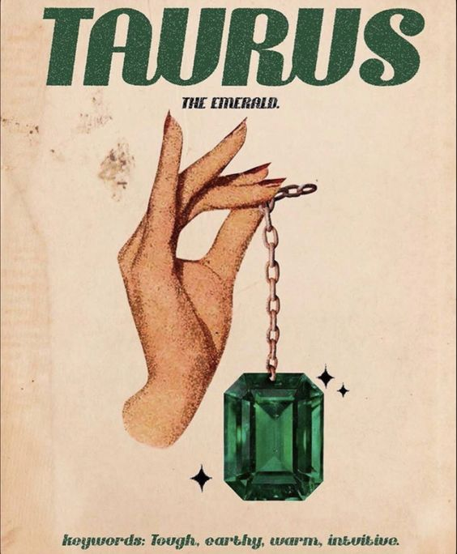

Personality Traits:
Taurus individuals are known for their grounded and practical nature. They approach life with a sensible and realistic mindset, often exhibiting great patience and persistence in their endeavors. Ruled by Venus, the planet of love and beauty, Taureans have a strong connection to sensual pleasures and enjoy the finer things in life. They are dependable and reliable, valuing loyalty and providing steadfast support to their loved ones. Taurus individuals often have a strong sense of values and principles, appreciating stability and security. However, their stubbornness and resistance to change can pose challenges as they tend to thrive in stable and predictable environments
Personality Traits:
- Grounded and practical: Taurus faces challenges head-on, fearlessly embracing the unknown.
- Patient and Persistent:Endowed with boundless energy, Taurus exudes a vibrant and enthusiastic aura.
- Sensual and Enjoying the pleasures of life:Taurus values freedom and autonomy, thriving in roles that allow self-expression.
- Dependable and Reliable:The impulsive nature of Taurus leads to spontaneous actions and decisions.
Likes:
In relationships, Taurus seeks a partner who can match their intensity and share in their adventurous spirit. Their love is passionate, and they thrive in relationships that allow for individual growth.Taurus, the reliable and sensual guardian, is an Earth sign grounded in practicality and stability. Governed by Venus, the planet of love and beauty, Taureans appreciate the finer things in life and have a strong connection to nature. With a Fixed mode, they exhibit determination, loyalty, and a love for routine.
Career and Ambitions:
taurus individuals are natural leaders who excel in roles that require initiative and decision-making. Their ambition, coupled with a desire for success, often leads them to careers in entrepreneurship, management, or fields that demand assertiveness.
I Recommend watching this!
Get to know your fellow Taurus friends more!